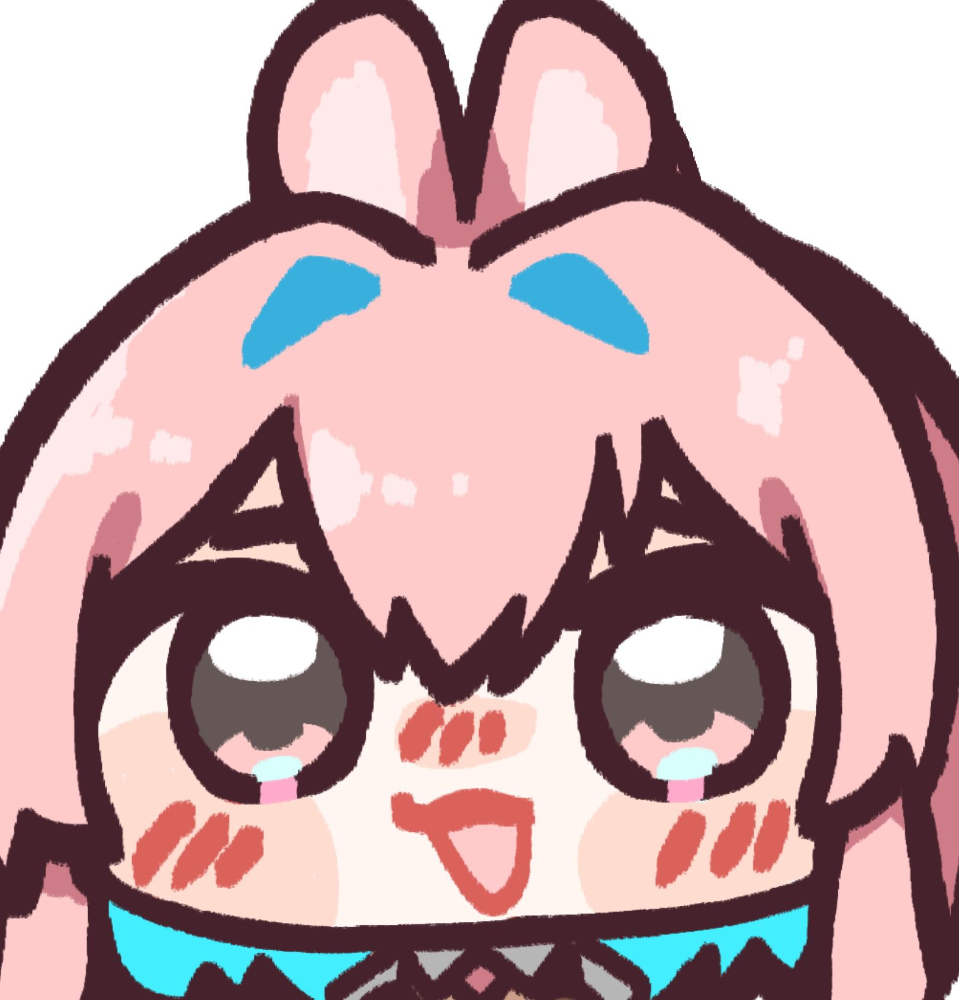
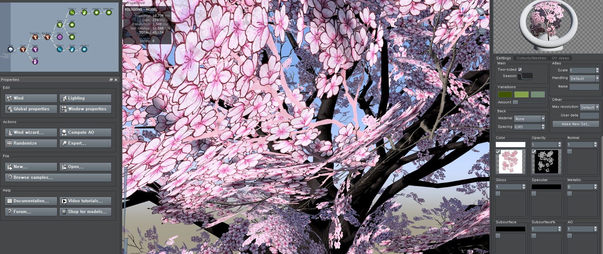

小鈴の里日記

Patohsi배경 모델러
2027
졸업작품으로 HD2D 게임 「小鈴の里日記」를 제작하며 배경과 레벨을 직접 구현했습니다.
제한된 리소스 안에서 시각적 완성도와 성능을 함께 확보하기 위해, 모듈러 키트와 텍스쳐 모듈화를 중심으로 재사용할 수 있는 구조를 만들었습니다.
PBR을 이용한 텍스쳐 자동화와 거리 기반 텍스쳐 변환으로 메모리를 절약하고, 모듈식 텍스쳐로 작업 시간을 줄였습니다.

프롭 제작
게임에 들어가는 소품은 하이폴리로 먼저 만든 뒤 텍스쳐를 만들고 로우폴리로 정리했습니다.


모듈식 텍스쳐 · 4x4 UV
트림 시트 대신 텍스쳐를 격자로 모듈화해 필요한 부분을 에셋마다 불러 쓰는 머티리얼 함수를 만들었습니다. 하나의 텍스쳐를 여러 에셋에 적용하면서 화질을 지키고 작업 시간을 줄였습니다.


환경 폴리지 · SpeedTree
필요한 자연물과 절벽 등은 SpeedTree로 프로젝트 분위기에 맞게 새로 만들거나 수정했습니다.


거리 기반 텍스쳐 변환
PBR 텍스쳐를 자동화하고, 거리 기반 텍스쳐 변환으로 멀리 떨어진 영역의 리소스를 줄였습니다.